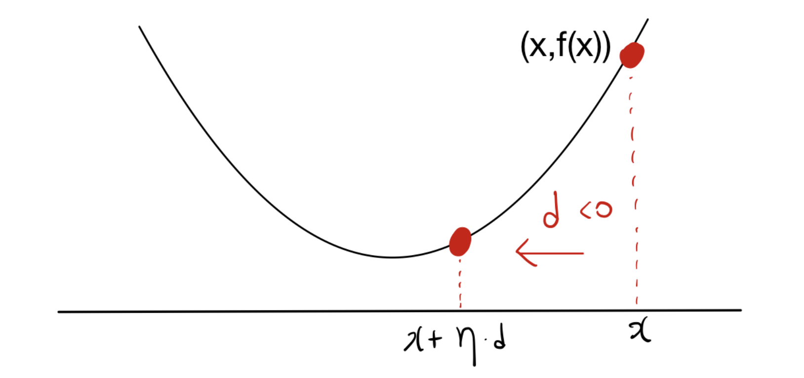
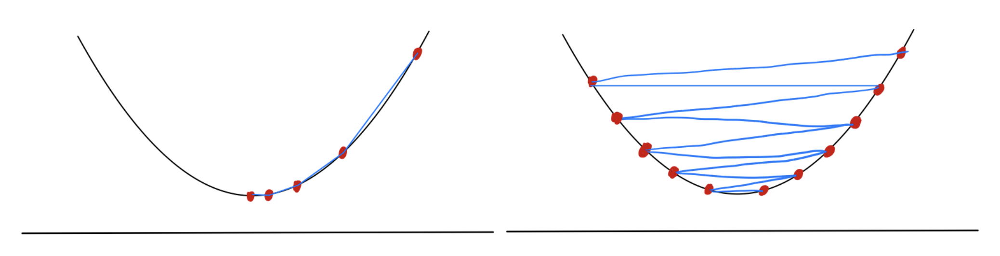
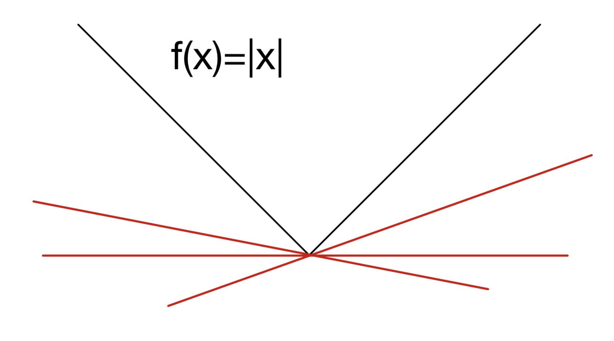

- 본 포스트는 최적화 이론의 가장 핵심적인 알고리즘인 경사하강법(Gradient Descent)의 기초를 다룹니다. 연속적이고 미분 가능한 함수에서의 최적화뿐만 아니라, 미분이 불가능한 경우에 적용할 수 있는 서브그레디언트(Subgradient) 방법론과 그 수렴성 분석까지 상세히 살펴봅니다.
1. 하강 방향 (Descent Directions)
최적화 문제에서 목표는 주어진 목적 함수 \(f: \mathbb{R}^d \rightarrow \mathbb{R}\) 의 값을 최소화하는 변수 \(x\)를 찾는 것입니다. 현재 위치 \(x \in \mathbb{R}^d\)에서 함수값을 줄이기 위해 이동해야 할 방향을 하강 방향(Descent Direction)이라고 합니다.
영벡터가 아닌 벡터 \(d \in \mathbb{R}^d \setminus \{0\}\)가 주어졌을 때, 해당 방향으로 미소(small) 스텝만큼 이동했을 때 함수값이 감소한다면 이를 \(x\)에서의 하강 방향으로 정의합니다.

- 위 그림에서 \(d\)는 하강 방향을 나타내며, \(\eta\)는 이동하는 보폭(Step size)을 의미합니다.
1.1. 일반적인 하강 알고리즘 (Generic Descent Method)
- 이를 일반화한 알고리즘은 다음과 같습니다:
- 초기화: 초기점 \(x_1 \in \text{dom}(f)\)를 설정합니다.
- 반복 (For \(t = 1, \dots, T\)):
- 현재 위치 \(x_t\)에서 하강 방향 \(d_t\)를 찾습니다.
- 적절한 스텝 사이즈 \(\eta_t > 0\)를 결정하여 위치를 업데이트합니다: \[x_{t+1} = x_t + \eta_t d_t\].
2. 스텝 사이즈 선택 (Choosing Step Sizes)
- 하강 방향 \(d_t\)를 결정했다면, ’얼마나 멀리 갈 것인가’를 결정하는 스텝 사이즈(학습률, \(\eta_t\))의 선택이 알고리즘의 수렴성에 지대한 영향을 미칩니다.

- 대표적인 스텝 사이즈 선택 방식은 다음과 같습니다:
- 고정 스텝 사이즈 (Constant step size): 모든 \(t \ge 1\)에 대해 \(\eta_t = \eta\)로 고정하여 사용합니다. 구현이 매우 간단하지만, 함수에 따라 수렴하지 않거나 속도가 매우 느려질 수 있습니다.
- 정확한 선탐색 (Exact line search): 주어진 방향 \(d_t\)를 따라 함수값을 최소화하는 최적의 스텝 사이즈를 해석적으로 혹은 수치적으로 찾습니다. \[\eta_t = \arg\min_{\eta \ge 0} f(x_t + \eta d_t)\]
- 백트래킹 선탐색 (Backtracking line search): 충분한 함수값 감소(Sufficient decrease)를 보장하기 위해 스텝 사이즈를 점진적으로 줄여나가는 휴리스틱 방법입니다.
- 하이퍼파라미터 \(0 < \alpha < 1\)와 \(0 < \beta < 1\)을 고정합니다.
- 초기 스텝 사이즈 \(\eta > 0\)에서 시작합니다.
- 다음 조건이 만족될 때까지 \(\eta \leftarrow \beta \eta\)로 줄입니다: \[f(x + \eta d_t) < f(x) + \alpha \eta \nabla f(x)^\top d_t\]
- 조건을 만족하는 최종 \(\eta\)를 \(\eta_t\)로 설정합니다.
3. 경사하강법 (Gradient Descent Method)
3.1. 하강 방향의 미분학적 특징
목적 함수 \(f\)가 미분 가능하다면, 방향 \(d\)로의 변화율은 테일러 전개에 의한 방향도함수(Directional derivative)로 측정할 수 있습니다. \[\lim_{\eta \to 0+} \frac{f(x + \eta d) - f(x)}{\eta} = \nabla f(x)^\top d\]
이 수식은 \(x\)에서 방향 \(d\)로 이동할 때 함수 \(f\)의 변화율을 의미합니다.
따라서 보조정리(Lemma)에 의해, 벡터 \(d \in \mathbb{R}^d \setminus \{0\}\)가 하강 방향이 되기 위한 필요충분조건은 다음과 같습니다: \[\nabla f(x)^\top d < 0\]
함수값을 가장 가파르게 감소시키는 최적의 하강 방향(Steepest descent direction)은 그래디언트의 반대 방향인 \(d = -\nabla f(x)\)입니다.
3.2. 알고리즘 및 근사적 해석
경사하강법은 이 가장 가파른 방향을 사용하는 알고리즘입니다.
- 초기화: \(x_1 \in \text{dom}(f)\)
- 업데이트 규칙: \(x_{t+1} = x_t - \eta_t \nabla f(x_t)\)
이 업데이트 규칙은 테일러 근사 해석 (Taylor approximation interpretation)을 통해 더욱 명확히 이해할 수 있습니다.
\(x_t\) 근처에서 \(f(x)\)를 1차 테일러 다항식으로 근사하면 다음과 같습니다: \[f(x) \approx f(x_t) + \nabla f(x_t)^\top (x - x_t)\]
하지만 멀리 떨어진 곳에서는 1차 근사가 부정확하므로, \(x_t\)와 너무 멀어지지 않도록 페널티를 부여하는 근접항 (Proximity term)을 추가합니다: \[f(x) \approx f(x_t) + \nabla f(x_t)^\top (x - x_t) + \frac{1}{2\eta_t} ||x - x_t||_2^2\]
위 이차 함수 우변을 \(x\)에 대해 최소화(미분하여 0이 되는 점을 탐색)하면 정확히 경사하강법의 업데이트 규칙인 \(x_{t+1} = x_t - \eta_t \nabla f(x_t)\) 도출됩니다. 즉, 경사하강법은 국소적 선형 근사와 이동 거리 페널티의 트레이드오프를 최적화하는 과정입니다.
3.3. 예시 (Example)
- 간단한 2차 함수 \(f(x) = 2x^2 + 3x\) 를 최소화해 봅시다.
- 해석적 최소점: \(f'(x) = 4x + 3 = 0 \implies x^* = -3/4\)
- 경사하강법 적용: 임의의 초기점 \(x_1\)에서 시작하며 고정 스텝 사이즈 \(\eta_t = \eta\)를 사용합니다.
- 업데이트 식: \(x_{t+1} = x_t - \eta(4x_t + 3)\).
- \(\eta\)의 크기에 따라 수렴 속도(Convergence rate)와 수렴에 필요한 반복 횟수(Required number of iterations)가 결정됩니다.
4. Lipschitz 연속 함수의 수렴성 분석
- 일반적인 경사하강법의 수렴성을 증명하기 위해서는 목적 함수의 특성에 대한 가정이 필요합니다. 주로 분석의 대상이 되는 것은 스텝 사이즈 \(\eta_t\)의 선택과, 그에 따른 수렴 속도의 분석입니다.
4.1. 립시츠 연속성 (Lipschitz Continuity)
- 미분 가능한 함수가 L-Lipschitz 연속이라는 것은 다음을 만족하는 것을 의미합니다: \[|f(x) - f(y)| \le L ||x - y||_2 \quad \text{for all } x, y\] 이는 함수의 기울기가 아무리 가팔라도 특정 상수 \(L\)을 넘지 않는다는 것을 의미하며, 그래디언트 관점에서는 \(||\nabla f(x)||_2 \le L\) 로 확장될 수 있습니다.
4.2. 수렴 정리 (Convergence Theorem)
함수 \(f: \mathbb{R}^d \rightarrow \mathbb{R}\)가 L-Lipschitz 연속이라고 가정합시다. 만약 다음과 같은 감소하는 스텝 사이즈를 선택한다면: \[\eta_t = \frac{||x_1 - x^*||_2}{L\sqrt{t}}\]
\(x^*\)는 최적해를 의미함
경사하강법이 생성한 시퀀스 \(\{x_t\}_{t=1}^T\)의 평균점에 대해 다음 상한(Upper bound)이 성립합니다: \[f\left(\frac{1}{T}\sum_{t=1}^T x_t\right) - f(x^*) \le \frac{L ||x_1 - x^*||_2}{\sqrt{T}}\]
이 정리는 매우 중요한 두 가지 사실을 알려줍니다:
- 수렴 속도 (Convergence Rate): 오차가 \(\mathcal{O}(1/\sqrt{T})\) 속도로 감소합니다.
- 필요 반복 횟수: 목표 오차 \(\epsilon\) 이내로 수렴하기 위해 필요한 반복 횟수는 \(T \approx \mathcal{O}(1/\epsilon^2)\) 번입니다.
5. 서브그레디언트 방법 (Subgradient Method)
- 현실의 많은 최적화 문제(예: L1 정규화, ReLU 활성화 함수 등)는 목적 함수가 매끄럽지 않아(non-differentiable) 특정 점에서 그래디언트를 정의할 수 없습니다.
5.1. 볼록 함수의 1차 특성과 서브미분 (Subdifferentials)
미분 가능한 볼록(Convex) 함수 \(f\)는 모든 \(x, y \in \text{dom}(f)\)에 대해 다음 1차 특성(First-order characterization)을 만족합니다: \[f(y) \ge f(x) + \nabla f(x)^\top (y - x)\]
즉, 함수의 접선(접평면)이 항상 함수값의 전역적인 하한(Global underestimator)이 됩니다.
이 개념을 미분 불가능한 볼록 함수로 확장한 것이 서브미분(Subdifferential)입니다. 고정된 점 \(x\)에서의 서브미분 \(\partial f(x)\)는 위 부등식을 만족하는 모든 벡터 \(g\)의 집합으로 정의됩니다: \[\partial f(x) = \{g \in \mathbb{R}^d \mid f(y) \ge f(x) + g^\top(y - x), \forall y \in \text{dom}(f)\}\]
이 집합에 속하는 원소 \(g\)를 서브그레디언트(Subgradient)라고 부릅니다. 만약 함수가 \(x\)에서 미분 가능하다면, 서브미분 집합은 유일한 원소를 가지며 \(\partial f(x) = \{\nabla f(x)\}\) 가 됩니다.

- 위 그림처럼 \(f(x) = |x|\)의 \(x=0\)에서의 서브미분은 \(\partial f(0) = [-1, 1]\)이 됩니다.
5.2. 서브그레디언트 예시 (Examples)
- 예제 1 (\(L_1\) Norm): \(f(x) = ||x||_1 = \sum_{i=1}^d |x_i|\). 여기서 서브그레디언트 벡터 \(g\)의 각 성분 \(g_i\)는 \(x_i \neq 0\)일 때는 부호 함수 \(\text{sgn}(x_i)\) 이고, \(x_i = 0\)일 때는 \([-1, 1]\) 사이의 값을 가집니다.
- 예제 2 (지시 함수 Indicator Function): 볼록 집합 \(C \subseteq \mathbb{R}^d\)에 대해 \(I_C(x)\)는 \(x \in C\)이면 \(0\), \(x \notin C\)이면 \(+\infty\)인 함수입니다. \(x\)에서의 서브미분 \(\partial I_C(x)\)는 기하학적으로 집합 \(C\)의 \(x\)에서의 법선 콘(Normal cone)을 의미하게 됩니다.
5.3. 서브그레디언트 알고리즘과 수렴성
- 알고리즘 구조는 경사하강법과 동일하나, 그래디언트 대신 서브그레디언트 중 하나를 임의로 추출하여 사용합니다.
- 초기화: \(x_1 \in \text{dom}(f)\)
- 반복: \(t=1, \dots, T\)에 대해 \(g_t \in \partial f(x_t)\)를 구하고, \[x_{t+1} = x_t - \eta_t g_t\] 로 업데이트합니다.
- 만약 서브그레디언트의 크기가 제한되어 있어 모든 \(x\)와 \(g \in \partial f(x)\)에 대해 \(||g||_2 \le L\)을 만족한다고 가정합시다. 미분 가능한 함수에서 보았던 것과 동일한 스텝 사이즈 규칙: \[\eta_t = \frac{||x_1 - x^*||_2}{L\sqrt{t}}\] 를 사용할 때, 서브그레디언트 알고리즘 역시 동일한 수렴 상한선을 가짐을 증명할 수 있습니다. \[f\left(\frac{1}{T}\sum_{t=1}^T x_t\right) - f(x^*)\le\frac{L||x_1 - x^*||_2}{\sqrt{T}}\]
- \(x^*\)는 최적해.
- 즉, 미분 불가능한 볼록 함수에 대해서도 스텝 사이즈만 신중하게 조절한다면 점근적으로 최적해에 수렴함을 보장할 수 있습니다.